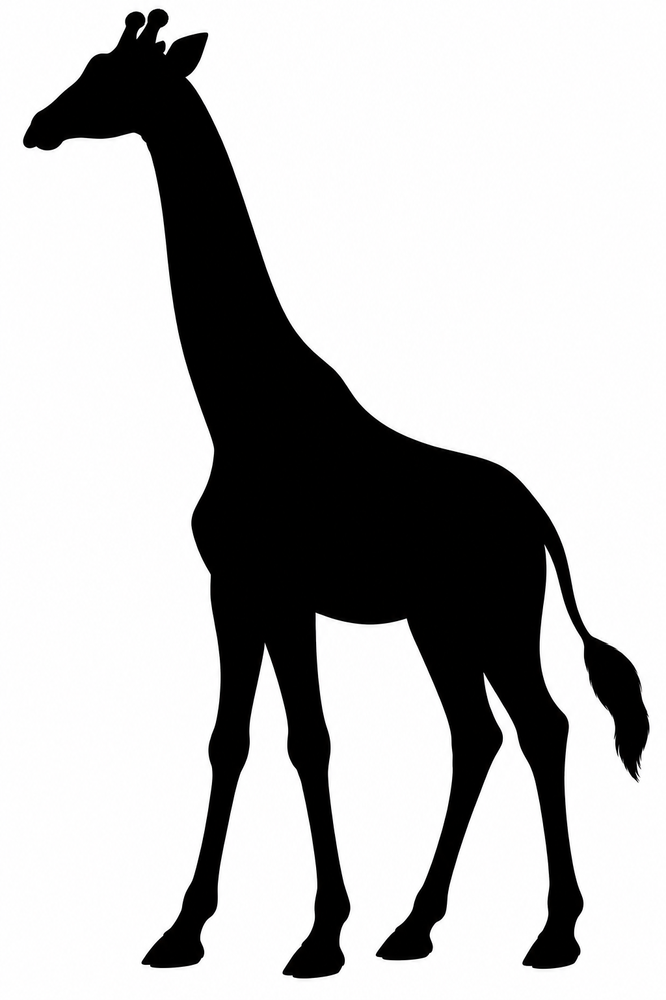

Produktionsansicht mit Motivspoiler. Technische Zertifizierung, Motivqualität und redaktionelle Freigabe sind getrennt. Motiv-/Spielabnahme: offen.
Quelle: giraffe-ma-r01 · Datei: MA-r01.png
Original SHA-256: 96fe95aec4e2e38ffdfb265ff2ba2f7b3ac6e66f4d449b96c5c094b3fec0ca4b
Normalisiert SHA-256: e274269de5dbfef4e677f1d1759c397bb5a07ba675df6873fadd7fe642425bc5

{'format': 'picross-image-design-v1', 'source_id': 'giraffe-ma-r01', 'origin': 'Native Bildbearbeitung der freigegebenen Giraffe A-r01; SHA-256 48c36159ee53d5dbcdc0e69b77f7dbdae62598dd31c517788f3f5f3da9f62c33. Motivdatei MA-r01 separat freizugeben.', 'rights': 'Eigenständige native KI-Generierung im ausdrücklich beauftragten Picross-Produktionsauftrag; keine Fremdbilder oder Fremdassets eingebracht.', 'briefing': 'Ganzkörper-Giraffe nach links: Hals-/Kopfprofil, vier Beine, Beinfreiheiten und rechter Schwanz erhalten. Motivvorlage als schwarze Silhouette; keine Flecken, Textur oder feinen Gesichtsdetails. Freigabe in Auftrag 3 erforderlich.', 'working_mode': 'faithful', 'width': 24, 'height': 36, 'crop': [16, 8, 1016, 1508], 'fit': 'exact', 'background': '#ffffff', 'alpha_below': 128, 'mode': 'mono', 'palette': [{'id': 'ink', 'rgb': '#000000'}], 'variants': [{'id': 'area-96', 'method': 'area', 'threshold': 96}, {'id': 'area-160', 'method': 'area', 'threshold': 160}]}
{'format': 'PNG', 'source_size': [1024, 1536], 'source_mode': 'RGB', 'orientation': 1, 'normalized_size': [1024, 1536], 'color_treatment': 'untagged/sRGB RGB or gray interpreted as sRGB', 'icc_sha256': None, 'alpha': 'preserved, composited against design background only during rasterization'}
{'tool': 'rp3-image-1', 'pillow': '12.3.0', 'jpeg': '8.0', 'jpeg_turbo': '3.1.4.1', 'littlecms': '2.19', 'zlib': '1.3.1.zlib-ng'}
{'status': 'stalled', 'proof_verified': True, 'certified': False, 'logic_hash': '901d44515f1cf1ff6f96e38ca6a8bb1d69d4a7c85bf4686fd4b45984f91bedb4', 'profile': {'id': 'full-line-mono', 'version': 1, 'start': 'unknown', 'deduction': 'all-line-supported-values', 'search': False}, 'profile_hash': 'e49e4cd74c4c4c02e08170ce670a40f48b82490a6bea52c3c764143d7a0af4b0', 'steps': 176, 'line_evaluations': 236, 'elapsed_seconds': 0.054671400001097936}
Kandidat: 6f4e470f49ff0ab5d451691da35f65e9511f729062cf7eb67b32c9f1c8dbc5ff
{'id': 'area-96', 'method': 'area', 'threshold': 96}
| Linie | Vollständige Hinweise (Länge:Farb-ID) |
|---|---|
| 1 | – |
| 2 | 3:ink |
| 3 | 4:ink |
| 4 | 5:ink |
| 5 | 6:ink |
| 6 | 3:ink |
| 7 | 2:ink |
| 8 | 3:ink |
| 9 | 3:ink |
| 10 | 3:ink |
| 11 | 4:ink |
| 12 | 4:ink |
| 13 | 5:ink |
| 14 | 5:ink |
| 15 | 6:ink |
| 16 | 7:ink |
| 17 | 8:ink |
| 18 | 12:ink |
| 19 | 12:ink |
| 20 | 13:ink |
| 21 | 13:ink |
| 22 | 12:ink |
| 23 | 11:ink |
| 24 | 3:ink 4:ink 1:ink |
| 25 | 1:ink 1:ink 3:ink 2:ink |
| 26 | 1:ink 1:ink 4:ink 1:ink |
| 27 | 1:ink 2:ink 2:ink 1:ink 1:ink |
| 28 | 2:ink 2:ink 2:ink 1:ink |
| 29 | 1:ink 1:ink 1:ink |
| 30 | 1:ink 1:ink 1:ink |
| 31 | 1:ink 1:ink 1:ink |
| 32 | 1:ink 1:ink 1:ink |
| 33 | 1:ink 1:ink 1:ink 1:ink |
| 34 | 1:ink 1:ink 1:ink 1:ink |
| 35 | 1:ink 1:ink 1:ink 2:ink |
| 36 | 2:ink |
| Linie | Vollständige Hinweise (Länge:Farb-ID) |
|---|---|
| 1 | – |
| 2 | 1:ink |
| 3 | 2:ink |
| 4 | 3:ink |
| 5 | 4:ink |
| 6 | 5:ink |
| 7 | 12:ink 2:ink |
| 8 | 11:ink 4:ink 1:ink 4:ink |
| 9 | 21:ink |
| 10 | 14:ink |
| 11 | 16:ink 1:ink |
| 12 | 10:ink 10:ink |
| 13 | 9:ink |
| 14 | 8:ink |
| 15 | 7:ink 1:ink |
| 16 | 8:ink 2:ink |
| 17 | 14:ink |
| 18 | 11:ink |
| 19 | 9:ink |
| 20 | 3:ink 4:ink 1:ink |
| 21 | 4:ink |
| 22 | 2:ink |
| 23 | 3:ink |
| 24 | – |
{'status': 'stalled', 'proof_verified': True, 'certified': False, 'logic_hash': '86aaa3985d4a2abcda9f1ea9ff87a66cdfb715febdca8cfd3f5ad6136f1f2231', 'profile': {'id': 'full-line-mono', 'version': 1, 'start': 'unknown', 'deduction': 'all-line-supported-values', 'search': False}, 'profile_hash': 'e49e4cd74c4c4c02e08170ce670a40f48b82490a6bea52c3c764143d7a0af4b0', 'steps': 159, 'line_evaluations': 219, 'elapsed_seconds': 0.045271999999386026}
Kandidat: 87c3c499316c38457b848ac79102a71b2a6d08982c7370560e320e4c461589d4
{'id': 'area-160', 'method': 'area', 'threshold': 160}
| Linie | Vollständige Hinweise (Länge:Farb-ID) |
|---|---|
| 1 | 2:ink |
| 2 | 3:ink |
| 3 | 4:ink |
| 4 | 6:ink |
| 5 | 7:ink |
| 6 | 3:ink |
| 7 | 4:ink |
| 8 | 4:ink |
| 9 | 3:ink |
| 10 | 4:ink |
| 11 | 4:ink |
| 12 | 4:ink |
| 13 | 5:ink |
| 14 | 6:ink |
| 15 | 6:ink |
| 16 | 7:ink |
| 17 | 10:ink |
| 18 | 12:ink |
| 19 | 13:ink |
| 20 | 13:ink |
| 21 | 14:ink |
| 22 | 14:ink |
| 23 | 13:ink |
| 24 | 3:ink 5:ink 1:ink |
| 25 | 3:ink 5:ink 2:ink |
| 26 | 1:ink 2:ink 4:ink 1:ink |
| 27 | 2:ink 2:ink 5:ink 2:ink |
| 28 | 2:ink 2:ink 2:ink 2:ink 1:ink |
| 29 | 2:ink 1:ink 2:ink 2:ink |
| 30 | 1:ink 1:ink 1:ink 2:ink |
| 31 | 1:ink 1:ink 1:ink 1:ink |
| 32 | 1:ink 1:ink 2:ink 1:ink |
| 33 | 2:ink 1:ink 1:ink 1:ink |
| 34 | 2:ink 2:ink 1:ink 1:ink |
| 35 | 2:ink 1:ink 2:ink 2:ink |
| 36 | 2:ink 2:ink 2:ink |
| Linie | Vollständige Hinweise (Länge:Farb-ID) |
|---|---|
| 1 | – |
| 2 | 2:ink |
| 3 | 2:ink |
| 4 | 3:ink |
| 5 | 5:ink |
| 6 | 8:ink 2:ink |
| 7 | 13:ink 4:ink |
| 8 | 19:ink 8:ink |
| 9 | 23:ink |
| 10 | 16:ink |
| 11 | 16:ink 1:ink |
| 12 | 10:ink 11:ink |
| 13 | 9:ink 1:ink |
| 14 | 8:ink |
| 15 | 7:ink 1:ink |
| 16 | 9:ink 4:ink |
| 17 | 16:ink |
| 18 | 12:ink |
| 19 | 10:ink |
| 20 | 12:ink 2:ink |
| 21 | 2:ink 10:ink |
| 22 | 2:ink |
| 23 | 4:ink |
| 24 | 1:ink |